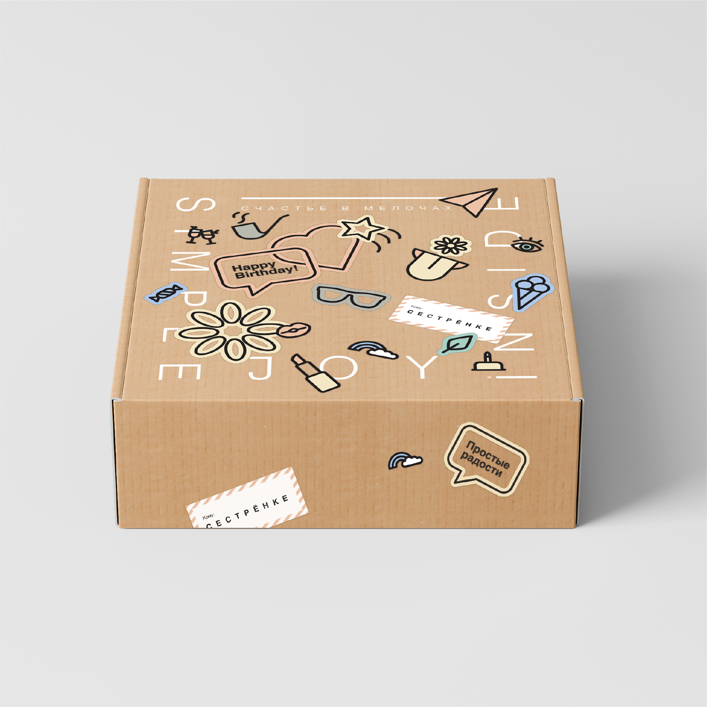
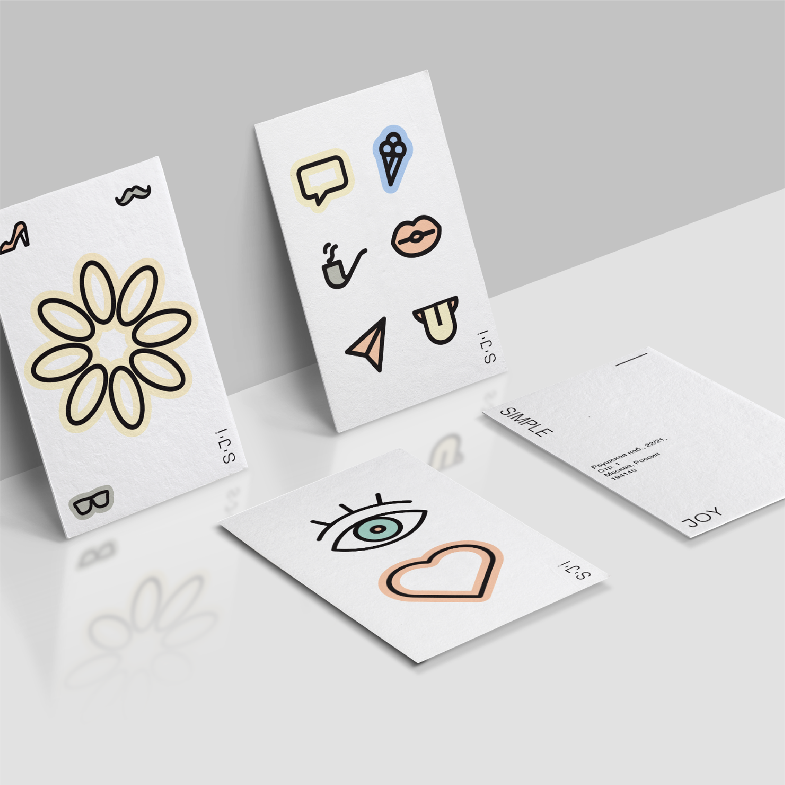
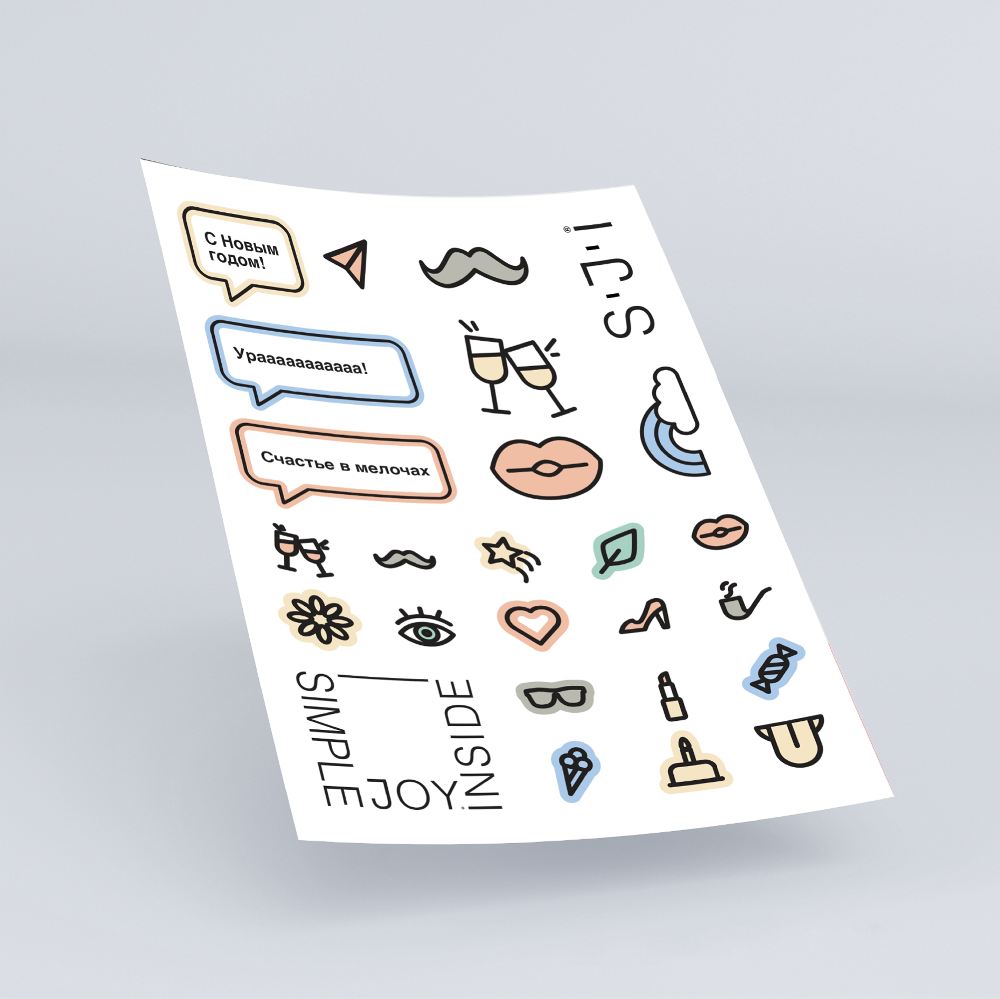
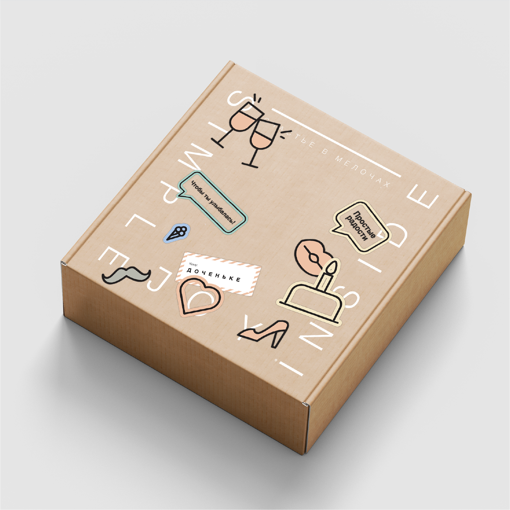
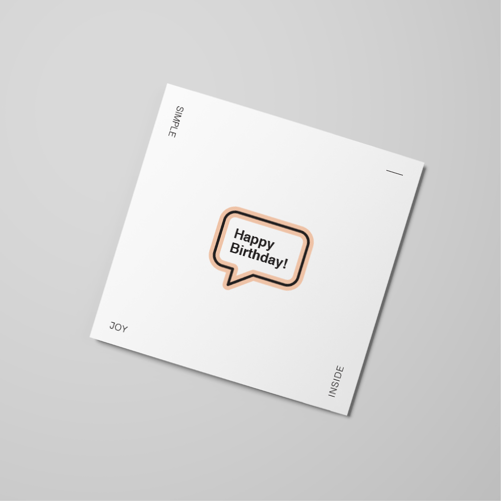
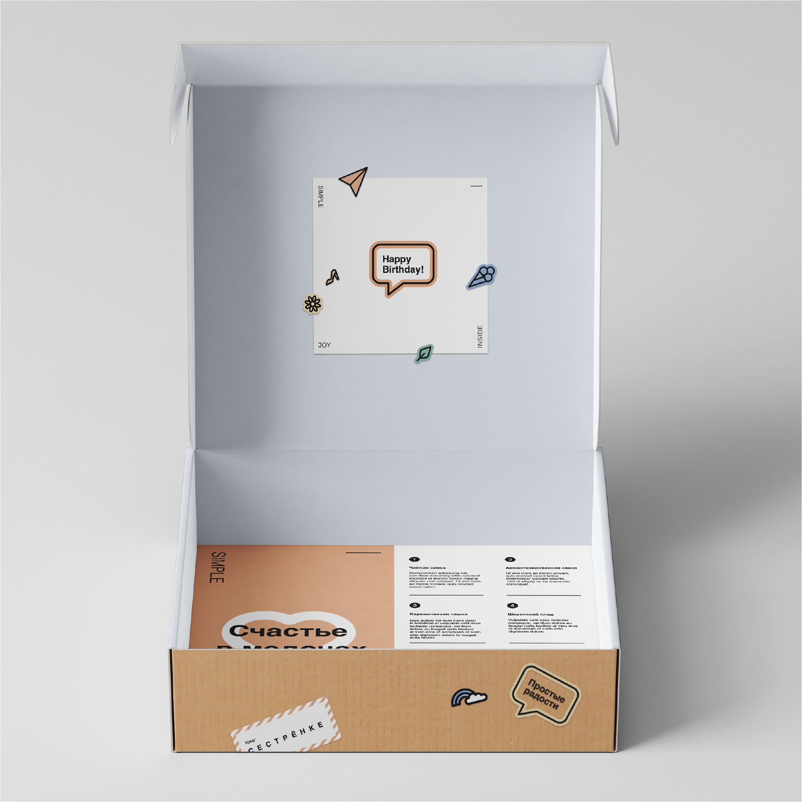
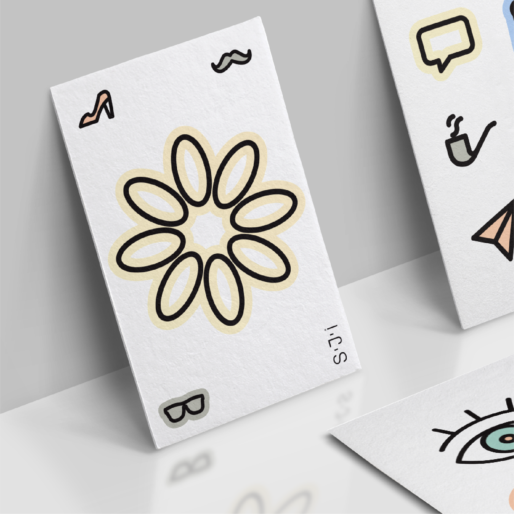

SJI is a personalized gift box startup that needed an identity flexible enough to serve a wide range of customers, occasions, and price points — without driving up production costs.
The challenge was to design a system, not just a logo: one capable of expressing near- infinite variation while remaining visually cohesive and easy to produce at scale. The solution centers on a geometric mark — an abstracted box — that acts as a structural canvas. Paired with a library of interchangeable, message-driven stickers, each package can feel tailored to the moment while the production process stays efficient and repeatable.
The result is a brand architecture built to grow with the business: new occasions, new audiences, new messages — all addressed by swapping a single modular element, rather than starting from scratch.






